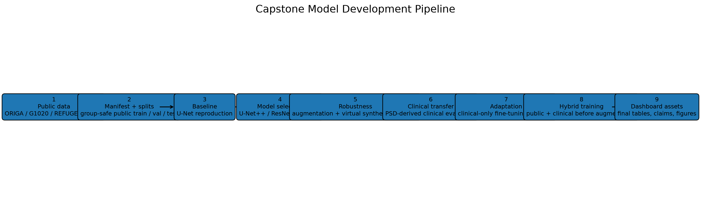
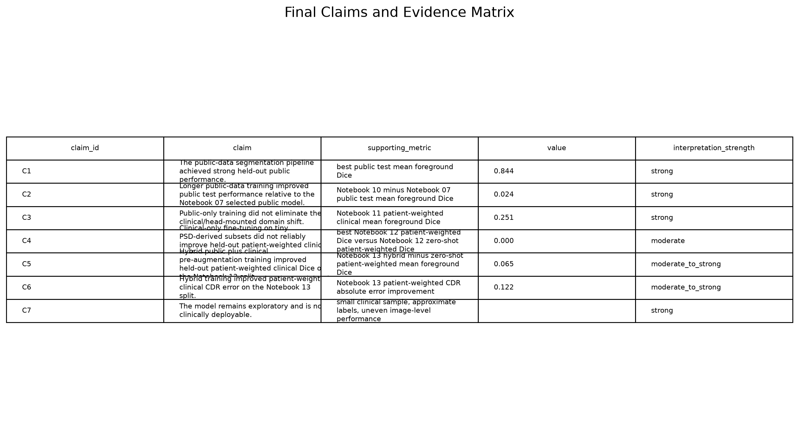

Key Metrics
Project Storyboard
Final Figures




UVA MSDS Capstone
A public-safe dashboard summarizing the model-development pipeline, public segmentation performance, clinical transfer experiments, and final evidence-backed project conclusions.

